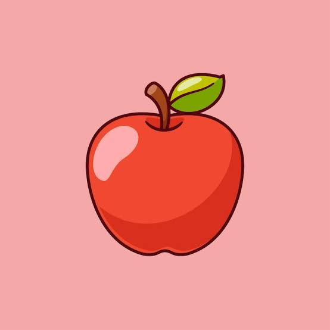

제목1
2021.03 ~ 2021.04 (1명)
HTMLCSSJS
MysqlFlask
예시1
- 내용1
- 내용2
Hello, I'm
WEB HACKING

웹사이트가 어떻게 동작하는지 알아갈수록, 그 안에 숨어 있는 허점까지 눈에 들어오기 시작했습니다. 그러면서 자연스럽게 관심이 넘어간 분야가 웹해킹입니다. 프론트엔드든 백엔드든 가리지 않고 들여다보려 하는 이유도, 결국 공격자의 시각으로 서비스를 바라보려면 전체를 알아야 한다고 생각하기 때문입니다. "우물 안 개구리가 되지 말자, 내가 아는 것이 전부가 아니다." 이문장을 항상 되새기며 지내다 보니, 한 가지 방식에만 머무르기보다는 이것저것 부딛혀보는쪽으로 자연스럽게 손이 가게 됐습니다. 그렇게 여러 대외활동과 협업을 거치면서, 매번 새롭게 주어진 도전이 저에게는 오히려 반가운 자극이었습니다. 앞으로도 스스로에게 계속 새로운 과제를 던지면서, 웹해킹 역량을 꾸준히 키워나가고자합니다.